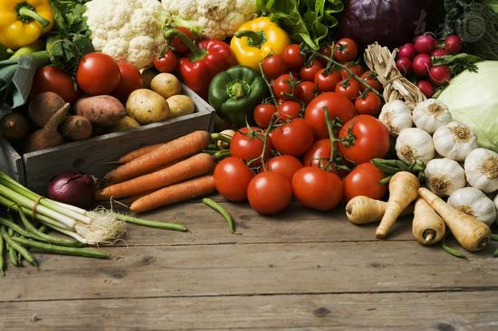

网传“医生永远不吃的5种食物”
2017年10月09日 08:23
最近早晚温差开始变大，有些朋友一个不小心就感冒了！很多人都觉得可能是自己穿少了，才让感冒有机可乘。可是，免疫力低下可能才是根本原因。提高免疫力，推荐这5种食物！

蘑菇
菌类食物富含蛋白质，并且含有铁、锌、钙等多种微量元素，脂肪含量低，还含有人体必需的氨基酸、生物活性物质，能够调节免疫，对维护人体健康起着很重要的作用。
蘑菇里香菇最好，富含维生素B和维生素D，可有效提高免疫力、降血脂。
红萝卜
萝卜含有丰富的淀粉分解酶以及大量的维生素C和微量元素锌，能够增强机体的免疫功能，提高抗病能力，避免身体受到细菌的入侵。
蜂蜜
在你的食物或饮料中加上一匙蜂蜜，能够提升你的天然抵抗力。因为蜂蜜有极好的抗菌消炎作用。长期服用，能提高免疫力，预防细菌病毒感染。
娃娃菜
据测定，每百克娃娃菜中约含有287毫克的钾，而同样重量的白菜仅含钾130毫克。钾是维持神经肌肉应激性和正常功能的重要元素，经常有倦怠感的人多吃点娃娃菜可有不错的调节作用。
常见的“上汤娃娃菜”就是很好的做法，可加些金针菇，用鸡汤来做高汤，对提高免疫力也有好处。
西兰花
花椰菜含丰富的维生素、矿物质等。还含有多种生物碱类、黄酮类化合物、硫代葡萄糖苷等活性成分。且花椰菜是含有类黄酮最多的食物之一，能提高机体的免疫力，可防止感冒和坏血病的发生。